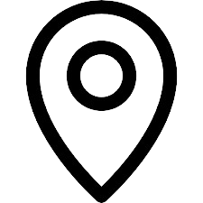

Doraemon
Perfil
Atuo como um guardião e amigo de confiança do Nobita, ensinando-lhe lições de vida, responsabilidade e valores morais.
Tenho um bolso quadridimensional: Retiro ferramentas fantásticas, como o Take-copter (bambu-hélice) e a Porta Mágica (Dokodemo Door).
Sou frequentemente confundido com um cão-guaxin ou texugo, o que me irrita, pois eu sou um gato robô.
Fui criado por Fujiko F. Fujio em 1969 e sou um ícone cultural japonês.
Nasci em 3 de setembro de 2112.
Principais Competências
Formação Acadêmica
Formado na escola primária Tanoshiku manabi-tai (1950) e formado em cuidados infantis na Yale University(1960).
Experiência Profissional
1. Cuidei de uma criança chamada Nobita

Fui enviado por Sewashi para o passado e cuidei do Nobita. Eu uso gadgets futuristas retirados do meu bolso mágico para resolver problemas diários do Nobita e evitar que ele tenha um futuro fracassado.
2. Cuidei de Sewashi Nobi
Antes de ser enviado, cuidei de Sewashi que era tataraneto do Nobita.
Contato

Emailbemlegaldodoraemonbrasil.gmail.com